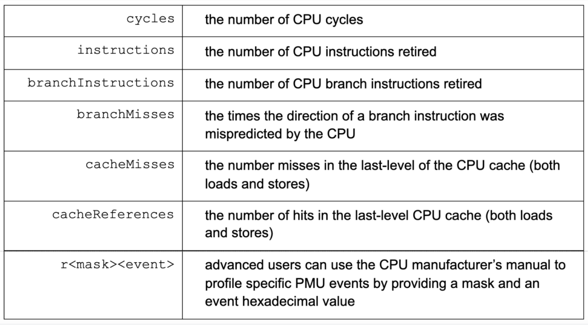

Uber 使用 Go 的规模这么大？！都自己定制的 Go 编译器了
大家好，我是站长 polarisxu。
今天看到 Uber 使用 Go 的情况，挺吃惊的，给大家分享下情况。
01 Uber 使用 Go 的情况
Uber 有数千个后端服务是使用 Go 实现的，它们运行在数百万个 CPU 内核上。因此，对于 Uber 来说，详细准确掌握 CPU 瓶颈至关重要。这不仅为了减少服务延迟，同时也能提高计算机运行效率。Uber 这个量级的规模，要求对代码和微观结构的影响有深入的了解。
02 定制 Go 编译器
其实说定制 Go 编译器有点不准确。主要是基于以上规模和要求，虽然 Go 内置了 Profiler，但这个 CPU Profiler 在基于 Linux 的系统上有严重的限制（也许在其他操作系统也有此问题，但 Uber 使用的是 Linux，其他机器并没有测试验证），同时内置的 Profiler 缺少掌握 CPU 瓶颈所需要的许多细节。
基于这些问题，Uber fork 了一份 github.com/golang/go 代码，在其上建立一个定制的 Go Profiler，以便更符合 Uber 的需求和 Uber 的商业运营规模。
具体来说，Uber 通过将丰富的硬件性能监视特性集成到 Go 的缺省 pprof 分析器中来增强它。这提供了几个关键好处：
- 能够获得更准确和精确的 Go 程序分析文件（profiles）；
- 监控各种 CPU 事件的能力，比如缓存丢失、套接字间（NUMA）通信、 CPU 分支错误预测等等；
- 能够以非常高的采样频率（最高可达 10 微秒）监控 Go 程序；
所以，Uber 定制的「Go 编译器」其实只是增强了 Profiler。注意，对 Profiler 的使用并不需要改变，也就是说，对外的接口、使用的工具和分析都没有变（比如堆栈属性、调用图和火焰图等），只是增加了更多的数据。
增强版的 Profiler，Uber 称之为 pprof++，这是带有硬件性能计数器的解决方案。
具体增加了哪些 CPU 事件，Uber 给了一张图，公开了最常见的一些事件。

关于这些事件的使用，以及 pprof++ 的更详细信息可以参考：https://eng.uber.com/pprof-go-profiler/。
Uber fork 的 Go 仓库地址：https://github.com/uber-research/go。
03 感想
看到这个消息，惊叹 Uber 对 Go 的使用和研究之深，也证明了 Go 被大公司的规模使用，看好 Go 的前途。
不知道 Uber 开发的 pprof++，有没有和 Go Team 沟通，尝试合入 Go 官方仓库，毕竟既然开源出来了，如果能够在官方中使用，可以让更多人收益。当然，因为目前只支持 Linux 系统，可能不太适合合入。至少，不希望 Go 出现分裂！